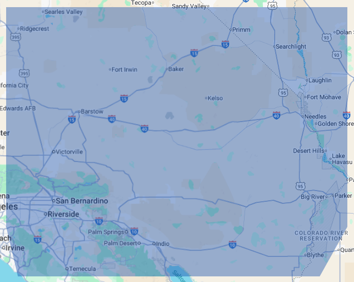

About Us
Family-Owned & Operated Across Generations
Founded in 1990 by Rodney J., Unique Ornamental Iron Inc. has grown from a small portable welding business into a family-run leader in the Southern California gate and fencing industry. With roots in metal fabrication passed down through generations, our team builds with passion, precision, and pride.
From beautifully crafted residential gates to durable commercial fencing solutions, our work is tailored to your vision — because if you can dream it, we can build it.
Today, Rodney and his sons Ryan and Chad carry forward the values that started it all: integrity, craftsmanship, and a deep commitment to helping others.
Made in the USA. Built to last. Powered by family.
Our Service Area
Homeland, CA & Surrounding Regions
Located in Homeland, CA, we proudly serve clients throughout Riverside County: Homeland, Hemet, Winchester, Nuevo, Romoland, Menifee, and surrounding areas.